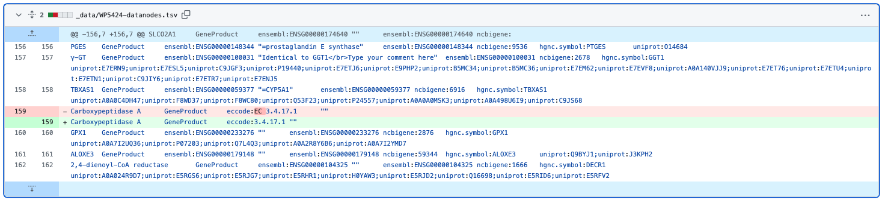

Goal
The goal of this task is to assess all edits made to pathways in the last 10 days. This will include existing pathways that were added as well as newly added pathways. Edits are assessed and tagged based on their current status, with the goal of inclusion in the Approved set. The criteria for inclusion in this set is highlighted below.
To save yourself time and effort, open the Weekly Curation report and take notes directly in the form.
Criteria for pathways to be approved:
- All interactions between genes, proteins and other pathway objects must be connected
- >90% of datanodes (genes, proteins, metabolites etc.) must be annotated with external database references
- Each pathway must have a complete description, meaning a minimum of 2-3 sentences summarizing the process that the pathway describes
- Each pathway must have at least one literature reference
- Each pathway must have a minimum of one pathway ontology term
- Pathway titles must adhere to our pathway title guidelines.
Instructions
- Click the pathway image or title below to view the pathway at WikiPathways (classic). You will need to be logged in at WikiPathways.
- There are a couple of ways you can assess the edits:
- Using the History tab, open the previous version in a new window and visually compare the two.
- Using GitHub's diff viewer is a convenient way to review the difference between two versions of the pathway. Let's use WP5424 as an example:
- Navigate to the pathway page on WikiPathways.org, for example https://www.wikipathways.org/pathways/WP5424.html.
- In the Activity section under the pathway, click the last edited date badge. This will take you to the GitHub page listing all commits for this pathway. Click on the latest entry.
- Commits might contain changes to more than one pathway; you can filter it by entering the pathway id, for example WP5424, in the Filter changed files field in the upper left. You can then easily select a changed file (datanodes, markdown and image file) relevant to WP5424 from the list to focus the view.
- The diff viewer will highlight lines that had deletions in red and lines that had additions in green, with the parts that were deleted/added in darker shades.
- For example, changes to References, Description and Annotations would be seen in the markdown (.md) file, and changes to the data node identifiers would be seen in the datanodes (.tsv) file. 
- If the change is not valid, revert the edit in the History table on the classic site. If unsure, start a discussion using the links in the Talk page.
- If the pathway is a new pathway, consider adding the Approved version tag to the pathway if it fulfills the criteria listed above.
- Consider adding quality tags to the pathway:
- Under Construction: the pathway appears incomplete, but is not a test pathway (i.e. the content is unique).
- Test Pathway: the pathway is entirely empty, is filled with random content, or has "Test" in the title.
- Click the Next pathway to load the next pathway and repeat the process. The function simply counts down the pathways edited in the last 10 days. Refresh will restart the countdown.
If you have a question related to one of the pathways you reviewed, report it to our curation issues tracker by clicking the button below. Issues reported here will be discussed in the Community Curation meetings.